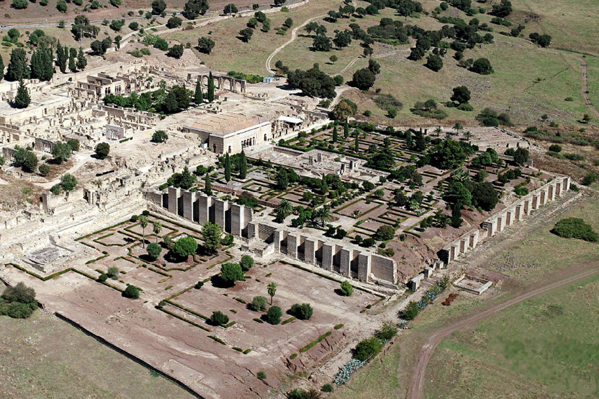

Discover Cordoba
Enrich yourself with the culture and art of this ancient city in southern Spain
Top three places to see in Cordoba
Visit the Mezquita and the roman bridge at once!
Walk around the tiny streets of the Jewish Quarter of Córdoba

Go for a hike in the mountains and discover Medina Azahara!
Your guide
"I have lived at Cordoba for almost 20 years, so I can show you all of its most iconic parts."
Carlos Florentin